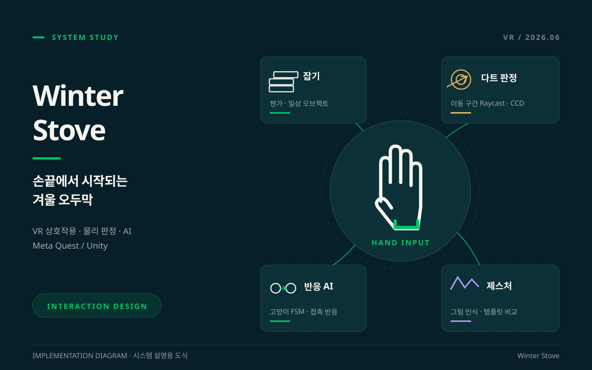
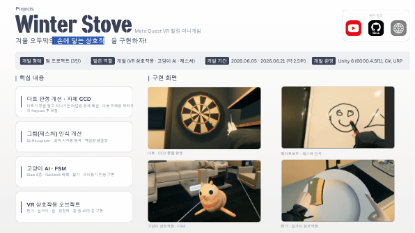

01
다트 터널링을 보완한 자체 CCD
문제
빠른 다트가 프레임 사이에 다트판을 관통했습니다.
구현
다음 프레임의 예상 위치까지 Raycast를 수행하고 충돌 시 위치를 보정했습니다.
결과
다트의 고속 이동에서 빠지던 판정을 보완했습니다.
SYSTEM FLOW
- 01현재 위치
- 02다음 프레임 예상 위치
- 03Raycast 충돌 검사
- 04다트 위치 보정
PROJECT CASE STUDY
Meta Quest VR 힐링 미니게임

THE PROJECT
겨울 오두막에서 손에 닿는 물건과 고양이를 다루는 VR 미니게임입니다. 일상적인 상호작용과 손그림 제스처를 구현했습니다.
VR 상호작용 · 고양이 AI · 제스처
구현 사례는 원본 프로젝트 포트폴리오를 기준으로 정리했습니다.
ENGINEERING NOTES
빠른 다트가 프레임 사이에 다트판을 관통했습니다.
다음 프레임의 예상 위치까지 Raycast를 수행하고 충돌 시 위치를 보정했습니다.
다트의 고속 이동에서 빠지던 판정을 보완했습니다.
같은 도형도 시작점과 그리는 방향에 따라 인식이 달라졌습니다.
$1 Recognizer에 최적 시작점 탐색과 역방향 템플릿을 적용했습니다.
입력 순서 차이를 고려하는 제스처 인식을 구성했습니다.
배회와 잡기·쓰다듬기 입력의 반응을 분리해야 했습니다.
8종 State의 FSM과 NavMesh 배회를 구현했습니다.
잡기·쓰다듬기에 반응하는 고양이 AI를 구성했습니다.
각 물건의 규칙에 맞는 직접 조작이 필요했습니다.
젠가·설거지·술·펀칭백·총 등 10여 종 상호작용 오브젝트를 구현했습니다.
여러 놀이가 한 오두막의 직접 조작 경험으로 이어지도록 구성했습니다.
TAKE A CLOSER LOOK
